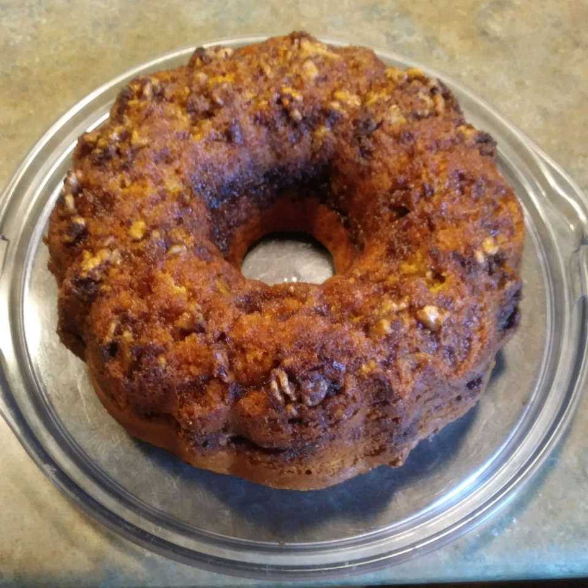

Cinnamon Coffee Cake II

Description
Yellow cake mix, vanilla pudding mix, and butterscotch pudding mix combine to create a tender, extremely moist cake with very little effort from you. A mixture of brown sugar, cinnamon, and nuts acts as both the filling and the topping, adding a toasty crunch throughout.
Tastes great for breakfast, brunch or dessert. May also be made in a Bundt pan.
Ingredients
- 1 (18.25 ounce) package yellow cake mix
- 1 (3.4 ounce) package instant vanilla pudding mix
- 1 (3.4 ounce) package instant butterscotch pudding mix
- 4 eggs
- 1 cup water
- 1 cup vegetable oil
- 1 cup packed brown sugar
- 1 tablespoon ground cinnamon
- 1 cup chopped walnuts
Steps
- Preheat oven to 350 degrees F (175 degrees C).
- Grease a 9x13 inch baking pan, or a 10 inch Bundt cake pan.
- In a medium bowl, stir together the cake mix, vanilla pudding mix, and butterscotch pudding mix.
- Add the eggs, oil and water to the bowl, mix until well blended.
- In another bowl, stir together the brown sugar, cinnamon and nuts.
- Pour half of the batter into the pan, spread evenly.
- Sprinkle with half of the nut mixture.
- Cover with the rest of the batter, and sprinkle with the rest of the nut mixture.
- Bake for 20 minutes in the preheated oven.
- After 20 minutes, turn the oven down to 325 degrees F (165 degrees C) and bake for an additional 35 to 40 minutes.
Back to main page